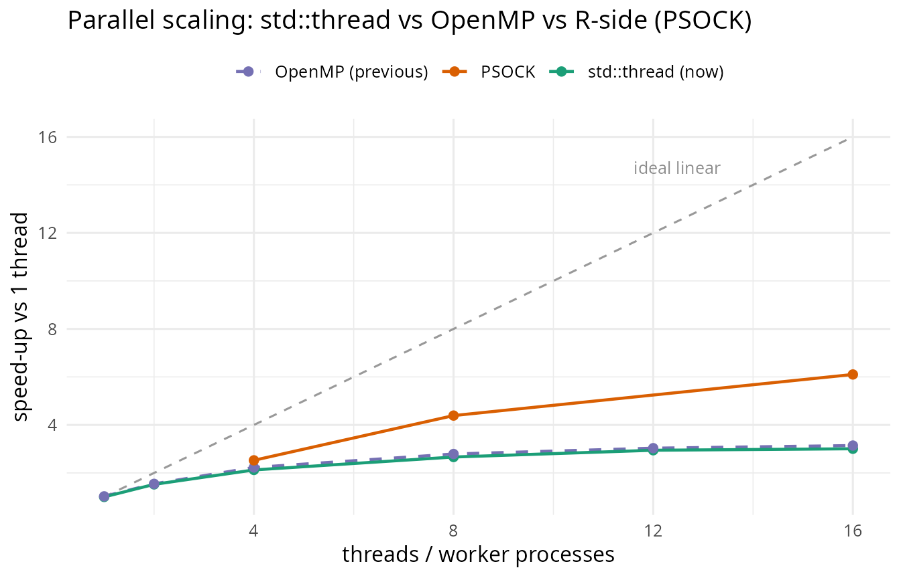

Parallel performance: in-process threads vs R-side parallelism
Source:vignettes/parallelism.Rmd
parallelism.RmdTwo kinds of parallelism
heatwave3 detects marine heatwaves one pixel at a time, and pixels are completely independent of one another: a pixel’s climatology and events depend only on its own temperature time series. That independence is what makes the problem embarrassingly parallel, and it can be exploited in two distinct ways.
In-process threads. The C++ core spreads pixels across CPU cores using
std::thread. Everything happens inside a single R process: the data slab is read once into shared memory, the threads compute, and one set of output files is written. Controlled by then_threadsargument (orsetHW3threads()). This is the fast path on a single machine, and it works out of the box on every platform with no OpenMP toolchain required.R-side parallelism (across processes). Several R processes each run
heatwave3single-threaded on a spatial tile of the grid, and the results are combined. Controlled with theparallelpackage. It is the only way to scale across more than one machine.
This vignette measures both, on the same dataset, and explains when to reach for each.
Backend note. Earlier versions used OpenMP for the in-process threads. heatwave3 now uses
std::thread, which needs no OpenMP runtime (nolibomp, noomp.h, no special install step) and avoids the macOSlibompworker-thread crash that struck heavily-loaded sessions (terra/GDAL, conda toolchains, or the Positron/arkkernel). The Results below compare the two backends.
Is multithreading active?
getHW3threads() reports the default thread count (roughly half your cores). n_threads is honoured on every platform; there is no build-time switch to miss.
library(heatwave3)
getHW3threads()
#> [1] 9 # default: 50% of 18 coresThe shared library links no OpenMP runtime; it uses std::thread (pthreads):
otool -L $(Rscript -e 'cat(system.file("libs/heatwave3.so", package="heatwave3"))') # macOS
ldd $(Rscript -e 'cat(system.file("libs/heatwave3.so", package="heatwave3"))') # LinuxThe dataset
The OSTIA reanalysis over the South-West Indian Ocean / South African east coast: a 400 × 200 grid at 0.05° resolution (15–35°E, 38–28°S), 14,276 daily time steps (1982–2021), of which roughly 50,000 pixels are ocean. The climatological baseline is 1982–2011.
sst_file <- "/Volumes/OceanData/OSTIA_East_Coast_MHW/SWIO_Jan1982-Dec2021.nc"
var_name <- "analysed_sst"
clim_period <- c("1982-01-01", "2011-12-31")All three methods produce the same deliverable, the full event table as an in-memory data.frame, so their wall-clock times are directly comparable.
Method 1: single-threaded
The baseline. n_threads = 1 forces one core regardless of the package default.
library(heatwave3)
run_once <- function(nthreads, lon_range = NULL) {
stem <- tempfile()
on.exit(unlink(paste0(stem, c("_clim.nc", "_events.nc"))))
out <- detect3(
sst_file,
name = stem,
climatologyPeriod = clim_period,
var_name = var_name,
lon_range = lon_range,
category = TRUE,
n_threads = nthreads,
quiet = TRUE
)
hw3_export(out[["events"]])
}
system.time(ev1 <- run_once(1L))Method 2: in-process multithreading
Identical call, more threads. Because pixels are independent, each thread takes a share of them, with no locking and no coordination.
system.time(ev12 <- run_once(12L))
# Results are independent of thread count:
nrow(ev1) == nrow(ev12)
#> [1] TRUESweeping the thread count maps the scaling curve:
for (nt in c(1, 2, 4, 8, 12, 16)) {
t <- system.time(run_once(nt))[["elapsed"]]
cat(sprintf("%2d threads: %5.1f s\n", nt, t))
}Method 3: R-side parallelism (PSOCK)
To scale across machines, or to parallelise the read and the assembly as well as the compute, split the grid into longitude tiles and run one single-threaded heatwave3 per worker process. Since pixels are independent, the union of the tiles is identical to a whole-domain run.
We use a PSOCK cluster (independent R processes) rather than fork-based mclapply(). On macOS, forking after the NetCDF/HDF5 and Apple Objective-C runtimes have initialised is unsafe (sporadic worker crashes, and the +[NSCharacterSet initialize] ... fork() abort). PSOCK launches clean processes that each open their own files, like running several Rscript jobs side by side. It is also the only option on Windows, where fork() does not exist.
library(parallel)
# Read the longitude coordinate once (cheap), to cut non-overlapping tiles.
g <- heatwave3:::hw3_read_sst(
sst_file,
var_name,
time_range = c("1982-01-01", "1982-01-02")
)
lon <- sort(unique(g$lon))
make_tiles <- function(n) {
pad <- 0.45 * min(diff(lon)) # < half the grid spacing
grp <- cut(seq_along(lon), breaks = n, labels = FALSE)
unname(lapply(split(lon, grp), function(L) c(min(L) - pad, max(L) + pad)))
}
run_psock <- function(n_workers) {
cl <- makeCluster(n_workers, setup_strategy = "sequential")
on.exit(stopCluster(cl))
clusterEvalQ(cl, suppressPackageStartupMessages(library(heatwave3)))
clusterExport(cl, c("sst_file", "var_name", "clim_period"))
tiles <- make_tiles(n_workers)
parts <- parLapply(cl, tiles, function(lr) {
stem <- tempfile()
on.exit(unlink(paste0(stem, c("_clim.nc", "_events.nc"))))
out <- detect3(
sst_file,
name = stem,
climatologyPeriod = clim_period,
var_name = var_name,
lon_range = lr,
category = TRUE,
n_threads = 1L, # 1 thread per worker!
quiet = TRUE
)
hw3_export(out[["events"]])
})
do.call(rbind, parts)
}
system.time(evp <- run_psock(16L))The n_threads = 1L inside each worker is essential: each freshly-loaded heatwave3 otherwise defaults to half the cores, so 16 workers each spawning 9 threads would oversubscribe the machine badly. See Don’t oversubscribe.
Results
| Method | Workers/threads | Time (s) | Speed-up |
|---|---|---|---|
| Threads (std::thread, now) | 1 | 112.0 | 1.0 |
| Threads (std::thread, now) | 2 | 73.5 | 1.5 |
| Threads (std::thread, now) | 4 | 52.7 | 2.1 |
| Threads (std::thread, now) | 8 | 42.1 | 2.7 |
| Threads (std::thread, now) | 12 | 38.0 | 2.9 |
| Threads (std::thread, now) | 16 | 37.3 | 3.0 |
| Threads (OpenMP, previous) | 1 | 109.3 | 1.0 |
| Threads (OpenMP, previous) | 2 | 72.5 | 1.5 |
| Threads (OpenMP, previous) | 4 | 50.3 | 2.2 |
| Threads (OpenMP, previous) | 8 | 40.2 | 2.8 |
| Threads (OpenMP, previous) | 12 | 37.0 | 3.0 |
| Threads (OpenMP, previous) | 16 | 35.7 | 3.1 |
| PSOCK (R workers) | 4 | 44.4 | 2.5 |
| PSOCK (R workers) | 8 | 25.5 | 4.4 |
| PSOCK (R workers) | 16 | 18.4 | 6.1 |

On this run (whole domain, ca. 50,000 ocean pixels, warm file cache), the single-threaded baseline took 112 s. In-process std::thread reached 3.0× (37 s) at 16 threads, and R-side PSOCK reached 6.1× (18 s) at 16 workers. Every run returned the same 4,863,985 events.
std::thread vs OpenMP
This release replaced the OpenMP backend with C++ std::thread. The switch was performance-neutral: at matched thread counts std::thread ran within about 5% of the previous OpenMP build, tracking the same scaling curve. At 16 threads it took 37.3 s against OpenMP’s 35.7 s; at 4 threads, 52.7 s against 50.3 s. That small, consistent overhead buys two things, namely freedom from the macOS libomp worker-thread crash that struck when heatwave3 ran alongside heavy dynamic libraries (terra, sf, GDAL) in the same process, and the removal of the OpenMP build dependency altogether. The dashed line in the figure is the old OpenMP build; the solid green line, the current std::thread build, sits just beneath it.
Reading the curves
Both threading and PSOCK speed the analysis up substantially, and both fall short of ideal linear scaling, but PSOCK scales further, for a reason worth understanding.
The work has three phases, namely read the NetCDF slab, compute per pixel, and assemble the 4.9-million-row event data.frame. In-process threads parallelise only the middle phase. The read and the assembly happen single-threaded in the one R process, so by Amdahl’s law that serial fraction caps the speed-up, and the thread curve plateaus near 3× regardless of thread count.
PSOCK parallelises all three phases. Each worker process reads only its own longitude slice and builds only its own sub-frame, concurrently, so the I/O and the assembly scale with the worker count too. With the file already in the OS cache, those concurrent reads are cheap, and PSOCK keeps gaining past the point where in-process threading has flattened.
Two caveats keep this from being a blanket “PSOCK wins”:
-
Endpoint. This benchmark reads the events back into an in-memory
data.frame(viahw3_export()), which makes the serial assembly a large part of the thread build’s tail. The usual production endpoint (just write the event NetCDF and stop) removes that assembly, shrinking the serial fraction and narrowing the gap. - Storage. PSOCK’s edge depends on those per-worker reads being cheap. On a cold cache or slow/network disk, sixteen processes reading at once can contend, eroding or reversing the advantage. The in-process threads read the slab exactly once.
In-process threading also stays the simpler option, with one call, one output file, no tiling or merge, and no inter-process serialisation. PSOCK earns its overhead by parallelising the read and the assembly as well as the compute, by isolating failures to a single tile, and by scaling across separate machines.
Discussion
When to use which
-
In-process threads (
std::thread) are the default on a single machine. They have the lowest overhead, use shared memory, and write one NetCDF. Setn_threads, or leave it at the package default. Nothing to build or enable. - R-side parallelism (PSOCK) is for when (a) you want the read and the assembly parallelised too, not just the per-pixel compute, (b) you want to spread work across multiple machines in a cluster, or (c) you want process isolation so one failing tile cannot bring down the whole run. Each worker writes its own tile, and you merge afterwards.
- The two combine across a cluster. One PSOCK (or MPI) worker per node, each using
n_threadsacross that node’s cores, is the standard HPC pattern. On a single workstation, pick one.
Correctness
Because pixels are independent, every method returns the identical event table (we assert nrow() equality above, and the per-pixel metrics match to the bit). Tiling changes only which process computes a pixel, never the result. The one exception is detect_blob3(), which finds spatially connected heatwave blobs across pixels. That computation must see the whole grid and cannot be tiled this way.
Do not oversubscribe
Running N worker processes that each launch M threads creates N × M threads. If that exceeds your physical cores, the threads contend for them and everything slows down. Practical limits:
- Pure threads:
n_threads≤ physical cores. - Pure PSOCK:
n_workers≤ physical cores,n_threads = 1in every worker. - Hybrid (cluster):
n_workers_per_node × n_threads ≈ cores_per_node.
heatwave3 defaults to ca. 50% of cores so that a careless nested call does not saturate the machine, but explicit is better than implicit.
Platform notes
In-process multithreading is built in via std::thread, so there is no OpenMP toolchain to install or enable – no libomp, no omp.h, no build-time probe. n_threads works on every platform once the package builds. The only external dependency is the NetCDF C library; configure locates it and reports:
Using netcdf:
CPPFLAGS: -I/opt/homebrew/include
LIBS: -L/opt/homebrew/lib -lnetcdf
Parallelism: C++ std::thread (no OpenMP runtime required)Linux
sudo apt install libnetcdf-dev build-essential # Debian/Ubuntu
sudo dnf install netcdf-devel gcc-c++ # Fedora/RHEL
R CMD INSTALL heatwave3Fork-based mclapply() is also safe here, though PSOCK remains the portable choice for R-side parallelism.
macOS
brew install netcdf # the only external requirement
R CMD INSTALL heatwave3std::thread needs no Homebrew libomp and no omp.h. It also removes a class of crash seen on earlier OpenMP builds: a dlopen-ed libomp could fail to allocate worker-thread storage in a process with a large native footprint (terra/raster/sf and their GDAL stack, conda toolchains, or the Positron/ark kernel that embeds R) and segfault in __kmp_suspend. With std::thread that cannot happen, regardless of load order or front-end.
For R-side parallelism on macOS, prefer PSOCK. If you must use mclapply(), export OBJC_DISABLE_INITIALIZE_FORK_SAFETY=YES before starting R, and treat concurrent forked NetCDF/HDF5 access as unsafe.
Windows
configure.win locates NetCDF and multithreading via n_threads works with no extra steps. There is no fork() on Windows, so mclapply() silently runs serially, and R-side parallelism must use a PSOCK cluster (makeCluster() / parLapply()), exactly as shown above.
Summary
| Approach | Enable with | Best when | Notes |
|---|---|---|---|
| Single-threaded | n_threads = 1 |
debugging, tiny grids | reference result |
Threads (std::thread) |
n_threads = N |
one machine | low overhead, shared memory, single output, no OpenMP needed |
| PSOCK | parallel::makeCluster |
many machines, or process isolation | tile by longitude, n_threads = 1 per worker |
All three give the same science. In-process threads are the efficient default on a single host, and R-side parallelism is the route to multi-machine scaling and process isolation.